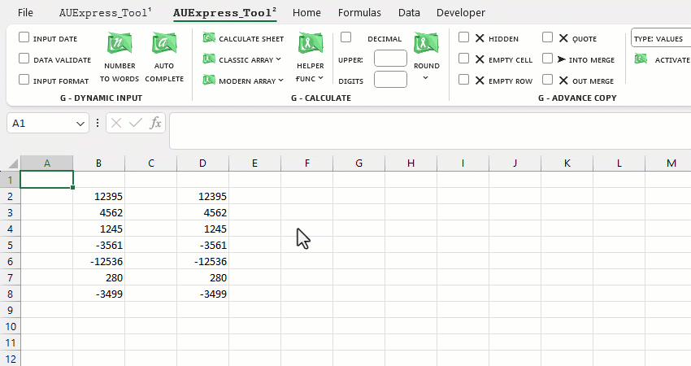
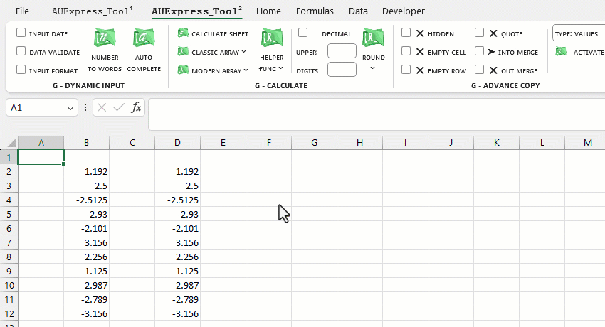
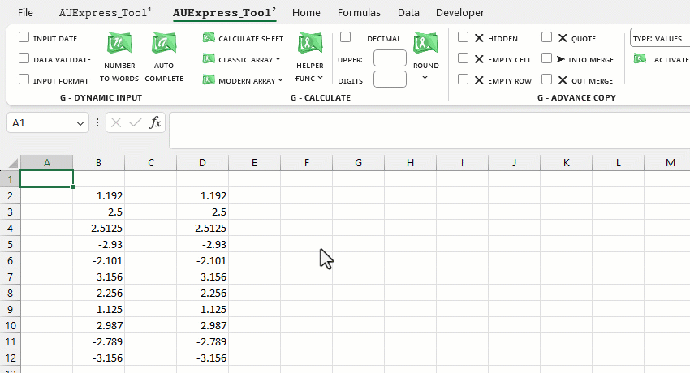

VD1: Làm tròn xuống (roundown) số nguyên đến hàng trăm.
VD2: Làm tròn lên (roundup) số thập phân đến số thập phân có 2 chữ số.
Chú ý: tích vào mục [Decimal] khi chỉ định số lượng chữ số thập phân sẽ làm tròn [Digits].
VD3: Làm tròn xuống số thập phân theo bước nhảy 0.5
VD4: Làm tròn đến gần nhất (round nearest) số thập phân với bước nhảy 0.5

Related function
NUMBERTOWORDS (feature) Thiết lập phụ từ cho ứng dụng đọc số thành chữ (Ribbon).
FLOOKUP Nhập liệu nâng cao, hỗ trợ tra cứu (lọc) và xuất nhanh dữ liệu dựa trên từ khóa.
XGROUP Hàm mở rộng của GROUP. (hỗ trợ các hàm nâng cao).
Return to Home